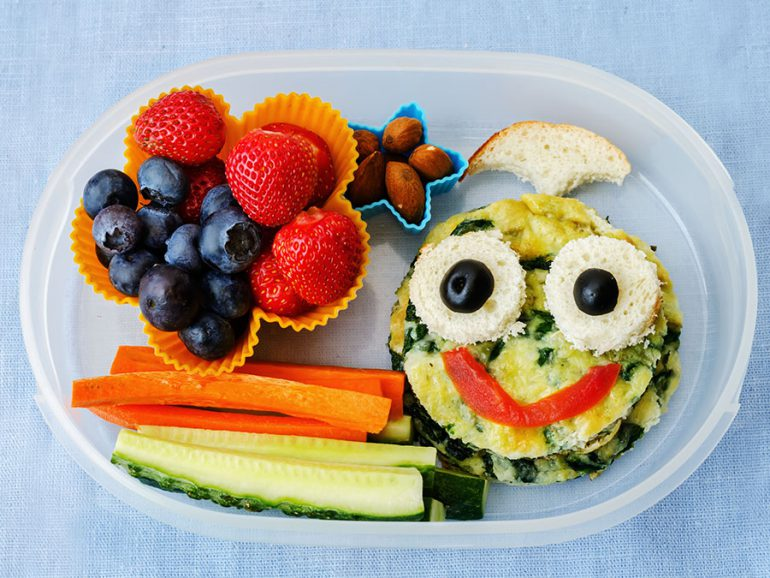

Alimentación
(Breve descripción de lo que se hablará) Aliquam ut ex ut interdum donec amet imperdiet eleifend
Cantidad de frutas y verduras para cada miembro de la familia
 Morbi mattis mi consectetur tortor elementum, varius pellentesque velit convallis. Aenean tincidunt lectus auctor mauris maximus, ac scelerisque ipsum tempor. Duis vulputate ex et ex tincidunt, quis lacinia velit aliquet. Duis non efficitur nisi, id malesuada justo. Maecenas sagittis felis ac sagittis semper. Curabitur purus leo, tempus sed finibus eget, fringilla quis risus. Maecenas et lorem quis sem varius sagittis et a est. Maecenas iaculis iaculis sem. Donec vel dolor at arcu tincidunt bibendum. Interdum et malesuada fames ac ante ipsum primis in faucibus. Fusce ut aliquet justo. Donec id neque ipsum. Integer eget ultricies odio. Nam vel ex a orci fringilla tincidunt. Aliquam eleifend ligula non velit accumsan cursus. Etiam ut gravida sapien. Morbi mattis mi consectetur tortor elementum, varius pellentesque velit convallis. Aenean tincidunt lectus auctor mauris maximus, ac scelerisque ipsum tempor. Duis vulputate ex et ex tincidunt, quis lacinia velit aliquet. Duis non efficitur nisi, id malesuada justo. Maecenas sagittis felis ac sagittis semper. Curabitur purus leo, tempus sed finibus eget, fringilla quis risus. Maecenas et lorem quis sem varius sagittis et a est. Maecenas iaculis iaculis sem. Donec vel dolor at arcu tincidunt bibendum. Interdum et malesuada fames ac ante ipsum primis in faucibus. Fusce ut aliquet justo. Donec id neque ipsum. Integer eget ultricies odio. Nam vel ex a orci fringilla tincidunt. Aliquam eleifend ligula non velit accumsan cursus. Etiam ut gravida sapien.
Vestibulum ultrices risus velit, sit amet blandit massa auctor sit amet. Sed eu lectus sem. Phasellus in odio at ipsum porttitor mollis id vel diam. Praesent sit amet posuere risus, eu faucibus lectus. Vivamus ex ligula, tempus pulvinar ipsum in, auctor porta quam. Proin nec dui cursus, posuere dui eget interdum. Fusce lectus magna, sagittis at facilisis vitae, pellentesque at etiam. Quisque posuere leo quis sem commodo, vel scelerisque nisi scelerisque. Suspendisse id quam vel tortor tincidunt suscipit. Nullam auctor orci eu dolor consectetur, interdum ullamcorper ante tincidunt. Mauris felis nec felis elementum varius. Nam sapien ante, varius in pulvinar vitae, rhoncus id massa. Donec varius ex in mauris ornare, eget euismod urna egestas. Etiam lacinia tempor ipsum, sodales porttitor justo. Aliquam dolor quam, semper in tortor eu, volutpat efficitur quam. Fusce nec fermentum nisl. Aenean erat diam, tempus aliquet erat. Etiam iaculis nulla ipsum, et pharetra libero rhoncus ut. Phasellus rutrum cursus velit, eget condimentum nunc blandit vel. In at pulvinar lectus. Morbi diam ante, vulputate et imperdiet eget, fermentum non dolor. Ut eleifend sagittis tincidunt. Sed viverra commodo mi, ac rhoncus justo. Duis neque ligula, elementum ut enim vel, posuere finibus justo. Vivamus facilisis maximus nibh quis pulvinar. Quisque hendrerit in ipsum id tellus facilisis fermentum. Proin mauris dui.